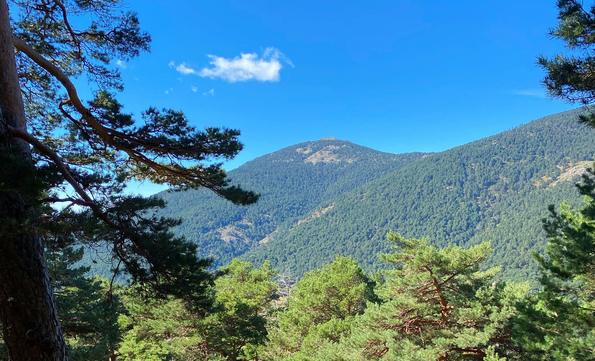
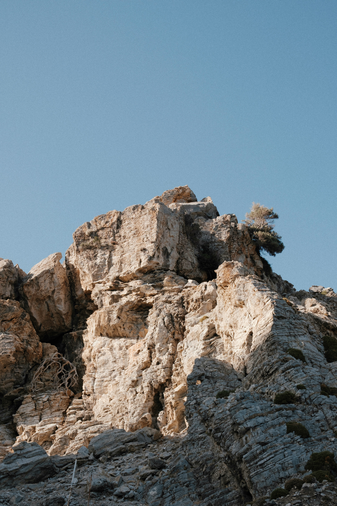
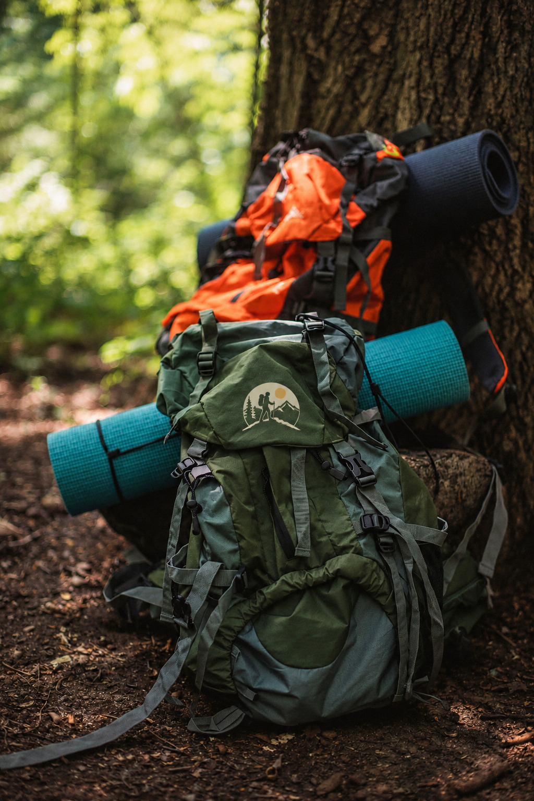

Senderos de bosque
Recorridos a la sombra de pinares y robledales de montaña.

Collados y pasos naturales
Transiciones abiertas con panorámicas amplias del valle.

Cumbres y miradores
Jornadas con mayor desnivel y vistas sobre el cordal.

Praderas y arroyos
Tramos tranquilos ideales para caminar a ritmo constante.

Luz de última hora
Planificación cuidadosa para disfrutar del regreso con margen.
Tipos de rutas y preparativos

Iniciación
Itinerarios accesibles, distancias contenidas y desniveles moderados para empezar.
Ver en galería
Media montaña
Rutas circulares y travesías de media jornada con cambios de ritmo y altura.
Ver en galería
Alta montaña
Ascensiones más exigentes que requieren buena forma física y margen horario.
Ver en galería
Equipo y seguridad
Calzado con buen agarre, agua suficiente, capas de abrigo y consulta del parte.
Consultar rutaConsejos y preguntas frecuentes
Revisa no solo los kilómetros, sino también el desnivel acumulado positivo y el tiempo estimado. Empieza por senderos cortos y de desnivel moderado antes de pasar a crestas o cumbres largas.
Agua, algo de comida energética, cortavientos o prenda de abrigo (la temperatura cambia rápido en altura), protección solar, batería cargada y el track o mapa descargado.
Puedes escribirnos desde la página de contacto indicando la zona, tus datos y cualquier comentario adicional para que revisemos tu consulta.